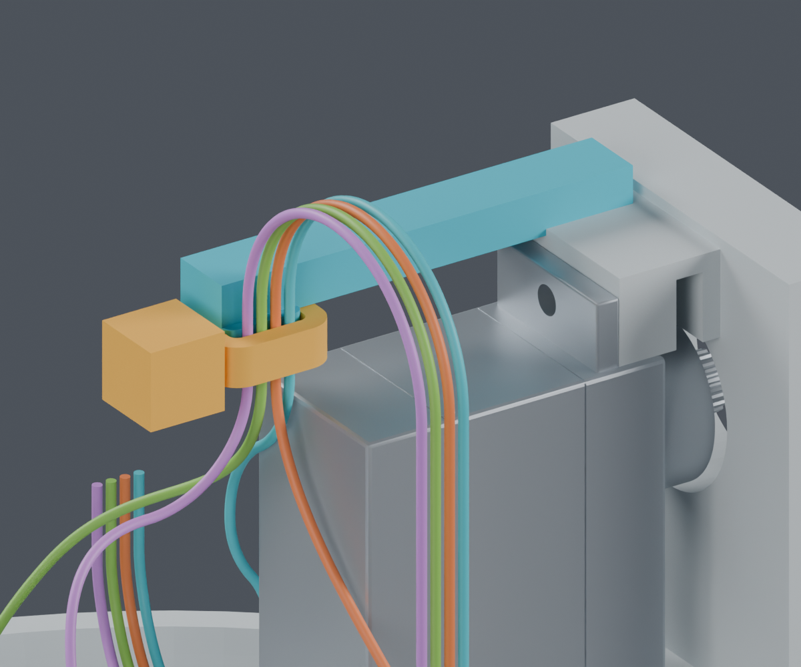
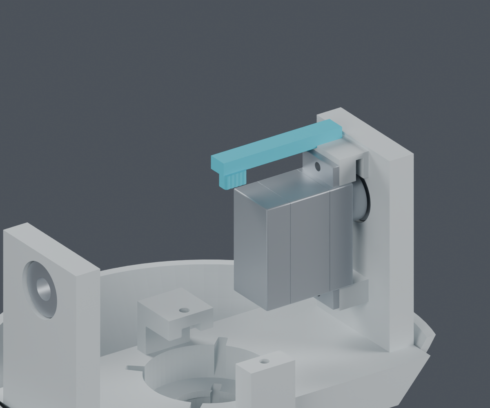
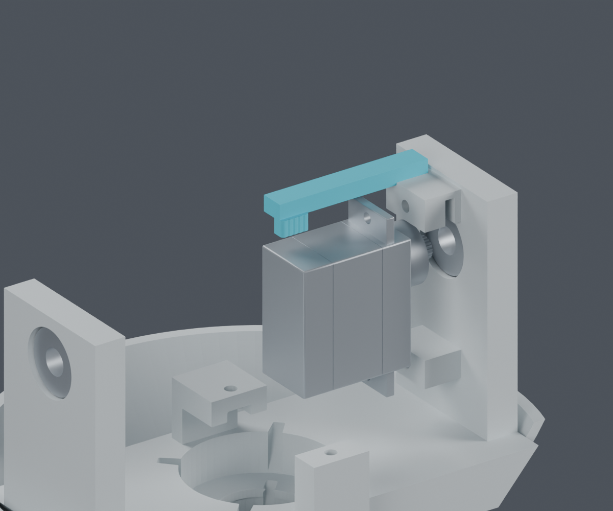
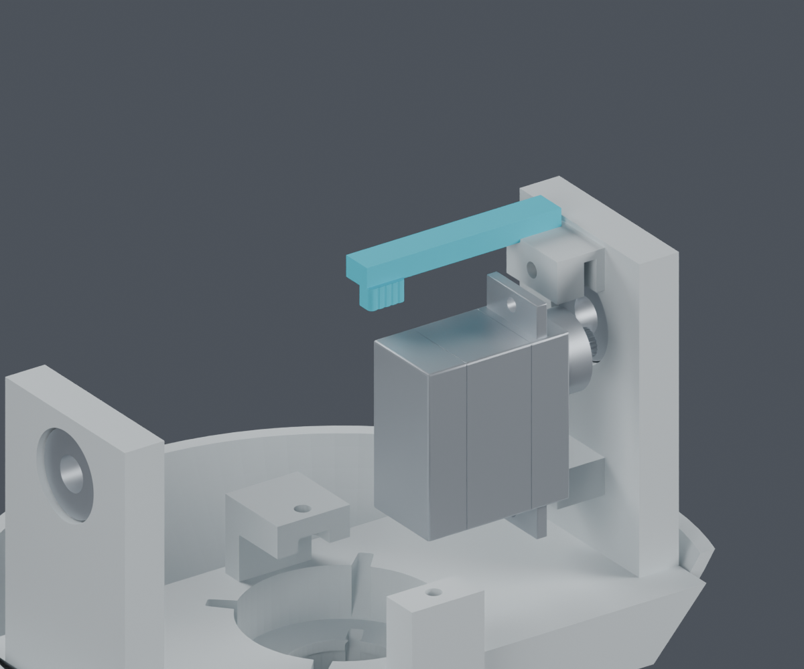
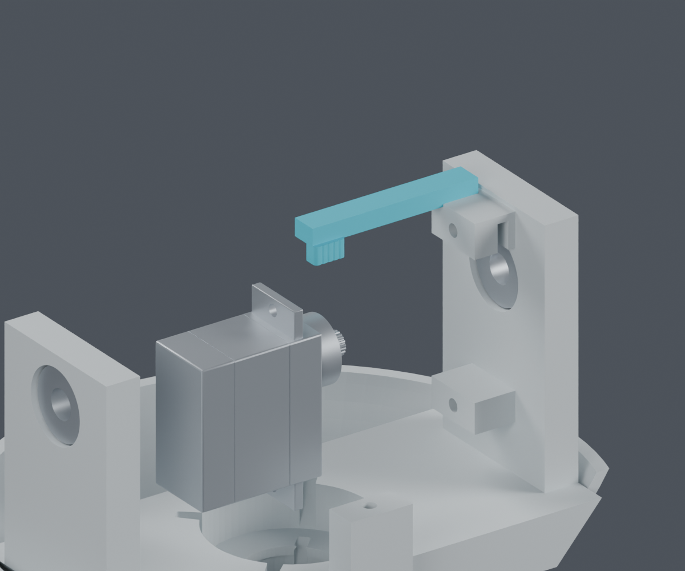
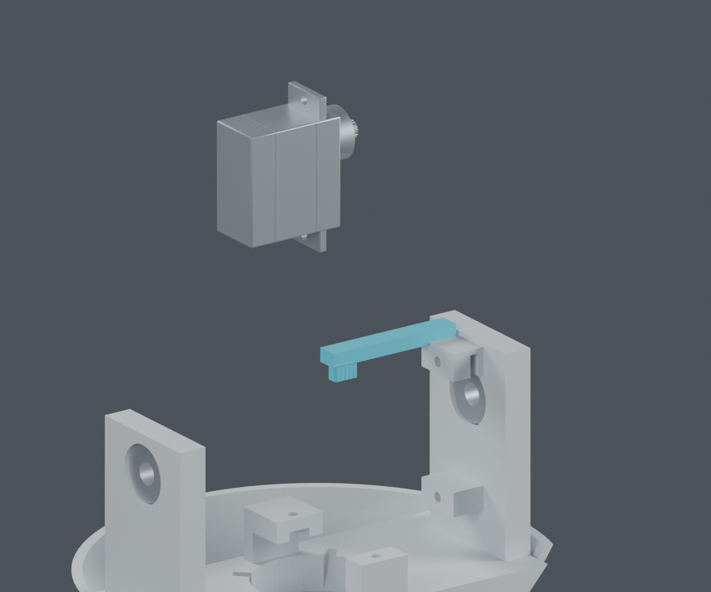

压线座并入原Pitch_Yoke，用一根扎带压住四根线；不增加打印件或螺钉。局部避让、舵机分步装入、工具与保存网格检查已完成。
独立候选，尚未采用。这里只解决一个固定点；其余固定、整束装入与供应商最终加工长度仍未完成。主模型保持M1.47。

黄色大方块包住目录扣头各方向的尺寸，是空间预留，并非实际扎带外形或打印件。部分结构与插头在图中隐藏；四色只区分路线，不定义实际针脚或线色。
原来的直线推进会碰到上安装耳。先装俯仰舵机，后装Yaw舵机、俯仰头框和线束。下图按拆卸方向排列，安装时反向操作。





| 检查 | 结果及限制 |
|---|---|
| 局部源实体 / 既有路线 | PASS，2653次相对位置及44条路线、4根局部扫掠；姿态采样 |
| 舵机拆装路径 | PASS，前移方案1066个位置样本；后三段平移间隙下界≥0.400mm，起始接触另列 |
| 工具转动 | PASS，−120°至+120°，跨度240°；手部空间未验证 |
| 保存后的模型 | PASS，封闭单体、无退化面，207个其他源件保持 |
| 压紧、拉脱、线材寿命 | NOT_TESTED，不能从几何无碰撞推断 |
扎带的穿入、尾端与剪切工具空间；其余固定点和整束安装；另外七根头部导线、实际CAM插合件和相机FPC；最终线长、公差及供应商压接要求。
扎带参考来自HellermannTyton T18R官方数据。本候选覆盖不同地区图纸上界，仍未冻结采购版次。逐项尺寸与来源。
完整说明 · Blender视图 · 候选实体 · 装入检查 · 工具重放 · 保存网格复核 · 复现命令 · 来源清单